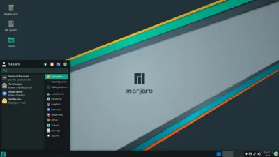

Привет, БИГ БРАЙН!
Да-да-да, я знаю, что многие сейчас сидят на винде и больше ничего не хотят
Но так ли это на самом деле? Может в мире соществует что-либо лучше нашей любимой винды?
Давайте во всем разбираться!
Итак, начнем с внешнего вида, точнее поговорим о кастомизации.
Начнем с Linux, допустим я выбрал дистрибутив, например Manjaro.
Дальше я должен выбрать рабочий стол, вот пример рабочих столов для Manjaro:
 |
 |
 |